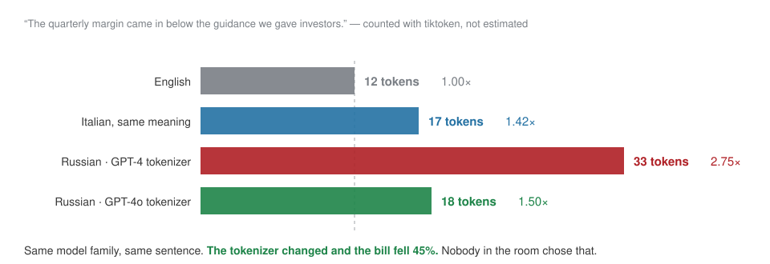
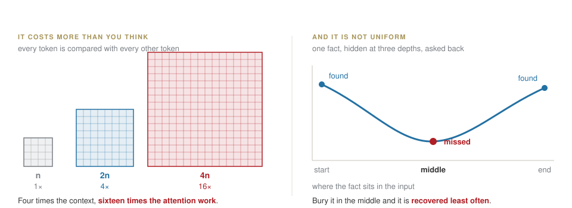
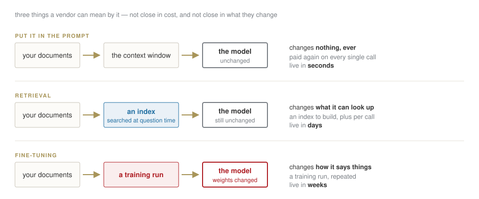
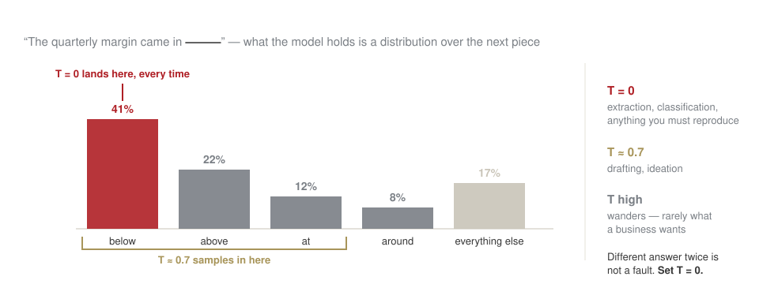
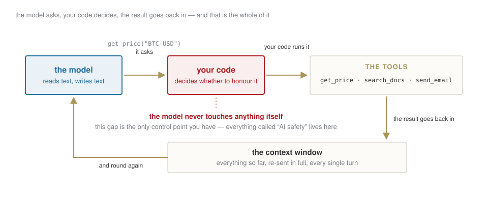

How LLMs work, and how we will work
Week 1 · Wednesday 23 September 2026 · 10:00–13:00
AI for Business and FinTech · European School of Economics, Florence
Ten weeks, one thing built each time
| 1–3 | 23 Sep – 7 Oct | a data pipeline, and a model evaluated honestly |
| 4–5 | 14 – 21 Oct | an LLM application: retrieval, tools, evaluations |
| — | 26 Oct | reading week — case brief, 40% |
| 6–8 | 4 – 18 Nov | fintech cases, a backtest, a DeFi analysis |
| 9–10 | 25 Nov – 2 Dec | red-team, and finish the capstone — portfolio, 60% |
| Rev. | 9 Dec | you present it |
Every artefact you build stays in your repository and becomes part of the next one. Nothing here is thrown away.
The deal, said once
- This is a lab. You write code from today, with an assistant beside you. You do not need to know Python. You need to be able to judge what the assistant produces.
- The rule of the course: anything an AI produced and you submit, you must be able to explain line by line. I will ask.
- Nothing confidential goes into an AI tool. Ever.
- Markets, crypto and DeFi here are educational simulations. Nothing in this course is investment advice.
What you actually leave with
Not “an overview of AI tools”. The ability to build a thing, test it, find where it is wrong, and defend it to people who will not read your appendix.
Three sentences from three pitch decks
Two of these are impossible. One is unanswerable as written.
Write down which is which. We come back to this at 12:55.
The three claims
Bet before we start
- “Our assistant remembers every conversation it has had with your customers.”
- “It learns from your corrections in real time.”
- “99.2% accuracy on invoice extraction.”
You will meet a version of all three in a data room. By the end of today you will know which part of the machine each one is lying about — and, more useful, the one question that collapses each claim.
This is the actual product of the course: not enthusiasm, and not scepticism. A short list of questions that separate a system from a demo.
Block A The model does not read
It never sees a word
Bet before we look
"Il margine è insostenibile" — four words. How many pieces does the model cut that into? Write a number.

A tokenizer is trained, and it has a native language
The vocabulary is learned from a corpus, by merging the pairs of characters that occur most often. A corpus that is mostly English learns mostly English pieces.
Everything else gets spelled out in fragments: Italian, Russian, a ticker, a surname, a number.
Which means the price of a document depends on a design decision taken before your document existed.
The same sentence, twice, one tokenizer apart
Same model family, same sentence. 33 pieces became 18.
Read that clip as a line in a budget

A pilot priced on one tokenizer and delivered on the other moves by 45% of its unit cost. That is the sort of thing that decides whether it clears its business case.
Take it apart yourself
LAB · session.ipynb § B1 — tiktoken
Type your own text and watch the count. Try, in this order:
- the same sentence in English, then Italian, then Russian
- a number:
1,234,567.89— count the pieces before you look - your own surname, then a listed company, then a company founded last year
- a line of Python
Then answer, from what you saw: which of those four is the model least equipped to reason about, and why?
What follows from it, in a business
| what you saw | what it costs you |
|---|---|
| tokens, not words | you are billed per token, in and out |
| non-English fragments more | the same document costs 1.4–2.8× depending on language and tokenizer |
1,234,567.89 is 7 tokens, not one number |
arithmetic is weak by construction — never trust a total it computed |
| a new company name shatters; an old one does not | the model is systematically more fluent about the past |
| the window is counted in tokens | long conversations silently become expensive |
The sentence to remember
The unit the system counts in is not the unit you think in, and the exchange rate between them is not stable.
Block B Its only memory is what you just sent
Everything it knows, every time

Which disposes of claim one
The model remembers nothing. Something else is storing and re-sending.
That something is a database, it has an owner, and every turn you pay to send it again. “It remembers” is not an AI capability. It is an infrastructure invoice.
And a longer window is not a free upgrade

What this rules out
“Just paste the whole thing in and ask” fails twice — on the bill, and on the answer. Retrieval is not a cost optimisation. It is what makes the answer correct. That is week 4.
So where do hallucinations come from?
Bet before we look
The model invents a plausible figure for a company’s 2025 revenue. Is that a bug, a lie, or the machine working exactly as designed?
Working as designed. It completes patterns. When the pattern needs a number that was never in the box, it produces the shape of a number that would fit.
It has no way to feel the difference between recalling and inventing. That is your job, and it is the habit this whole course builds.
“We will train it on your data” is three different products

A fact you fine-tuned in cannot be updated, cited, or withdrawn. Name the three, or you will not get a straight answer about which one you are buying.
And it disposes of claim two
“It learns from your corrections in real time.”
The weights are frozen when you call it. Nothing you type changes them.
What can honestly be meant is one of two things: your correction was written to a store and re-sent next time (fast, cheap, and not learning), or it entered a retraining queue (real, and measured in weeks).
Ask which. The answer tells you whether you are buying a model or a database, and they have very different prices.
Watch a conversation get expensive
LAB · session.ipynb § B2 — the cost cell
- Price one 10-K at today’s rates. Then a thousand a day, for a year.
- Now the part nobody expects: a twenty-turn conversation re-sends the whole history every turn. Compute what turn twenty costs against turn one.
- Re-price the whole thing with the Russian multiplier from the clip.
Three numbers, and you can argue about a pilot’s unit economics with the people who sold it.
Block C Why the same question gives different answers
It is choosing, not looking up

Temperature decides how much it respects those odds — and nothing else about the model changes.
And write that into the procedure, not the folklore
A process that an auditor will look at cannot say “we asked the AI”.
- the exact prompt, versioned like code
T = 0, and the model name and version recorded with the output- the input stored next to the answer
Why this matters more here than anywhere else
In a regulated process, “we cannot reproduce last quarter’s output” is not an inconvenience. It is the finding.
The habit this course is really about
LAB · session.ipynb § B3 — 🔍 CHECK
Run the model on a question about a real firm. Then take its answer apart, sentence by sentence, into two piles:
Verifiable a number you can look up, a date, a name, a claim with a source
Plausible but unverifiable fluent, confident, no way to check it, and quite possibly invented
Do this on every answer, all term, until it is automatic. It is the single habit that separates someone who uses these tools from someone who is used by them.
Block D How a machine measures meaning
Words become directions
An embedding turns text into a list of numbers, arranged so that similar meanings land near each other.
\text{"the margin fell"} \;\longrightarrow\; [0.21,\, -0.04,\, 0.88,\, \ldots]
Once meaning is a position, “similar” becomes a distance, and a computer can sort by it.
That is the whole of how search over your own documents works — which is week 4.
Find out why word-matching is not enough
LAB · session.ipynb § B4 — TF-IDF
Two sentences that mean the same thing, with no words in common:
“Revenue declined sharply in the third quarter.” “Q3 takings were well down.”
- Score them by shared words. The answer will be about zero.
- Now say what a search box built that way would do to a user who phrased it differently.
That gap is exactly what neural embeddings close, and why week 4 works at all.
Block E And then it can act
The loop behind every “agent”

Which is also where they fail
Every agent failure is a failure of that loop.
Wrong tool. Loop that never ends. Cost that runs away. A document that contains instructions and the model obeys them.
Weeks 4 and 5 are this loop, built and then broken on purpose.
Block F Your turn — the first notebook
Three assets, and one number that is wrong
LAB · session.ipynb § C — 80 minutes, you drive
- Pull daily prices for BTC, an equity and an index.
- Returns, summary statistics, one chart that answers a question.
- 🔍 CHECK — the volatility cell was written by an assistant. It contains two errors. Find them.
I will not touch the keyboard. When it breaks, read the error before asking me.
The two planted errors, and why they matter
√252 applied to crypto Markets trade 252 days a year. Bitcoin trades 365. The formula is right, the constant is wrong, and the output looks perfectly reasonable.
Returns added up Cumulative return is not the sum of daily returns. Compounding is a product. Close enough to look right, wrong enough to matter.
The sentence to remember
The assistant is fluent, not correct. It fails silently on constants and conventions — precisely where you would not think to look.
Back to the three claims
| the claim | the one question |
|---|---|
| “it remembers every conversation” | what stores it, and who pays to re-send it every turn? |
| “it learns from corrections in real time” | does that change the weights, or write a row in a database? |
| “99.2% accuracy” | on whose test set, of what size, against what baseline? |
The first two you can now answer yourself. The third you cannot — not because it is complicated, but because the number is meaningless without the base rate. That is week 3, and it is the one that costs people money.
Close
Homework 1 — three assets of your own, an honest table, one chart that answers a stated question, and a section titled “What the assistant got wrong”.
Due Tuesday 29 September, 23:59, in your repository.
Before you leave: Colab runs, GitHub repository created, and one notebook saved to it.
Next week: the same loop on real data, and the first thing you will show someone.
AI for Business & FinTech · ESE Florence